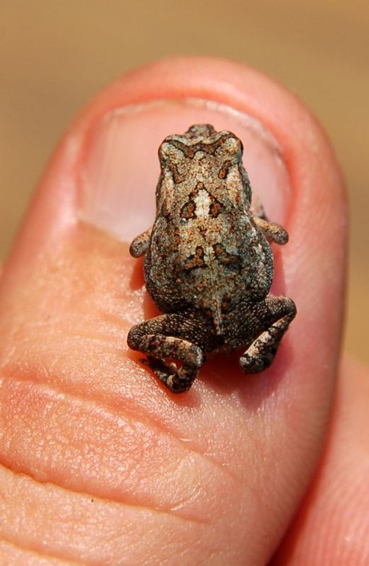
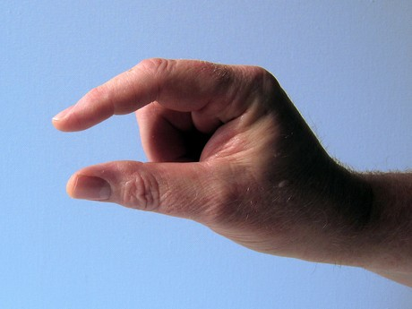

Guía de estudio para el JLPT N5: Adjetivos i parte 2
En este artículo continúo con la lista de adjetivos-i que se evaluarán en el JLPT N5 y que empezé la semana anterior con la parte 1. Si ésta es tu primera vez leyendo la guía, te invito a conocer las demás secciones que he escrito haciendo click en la etiqueta JLPT-N5.
1. Interesante

おもしろい
Omoshiroi
2. Aburrido
Imagen vía Cristiano
つまらない
Tsumaranai
3. Grande

大きい
おおきい
Ookii
4. Pequeño

Crédito de la imagen Scott
小さい
ちいさい
Chiisai
5. Pesado
Imagen gracias a David
おもい
Omoi
6. Liviano
かるい
Karui
7. Delicioso

Imagen vía gp
おいしい
Oishii
8. Mal sabor, desagradable

Imagen vía gp
まずい
Mazui
9. Largo
Imagen por Trey
長い
ながい
Nagai
10. Corto

みじかい
Mijikai
11. Cerca

Imagen via gp
ちかい
Chikai
12. Lejos
Imagen por Gemma
とおい
Tooi
13. Temprano
Crédito de la foto: Matthew
はやい
Hayai
14. Tarde, lento
おそい
Osoi
15. Grueso
Fotogragía por Jerry
あつい
Atsui
16. Delgado
うすい
Usui
17. Frío
つめたい
Tsumetai
Con este listado me haría falta sólo la 3era parte para terminar con los adjetivos-i y luego seguir con la lista de adjetivos-na (son menos, se los aseguro). Al igual que la guía anterior, sólo incluí los kanji que se evaluarán en el exámen N5.
Si eres de los que está pensando, ¿ me tengo que aprender todo ésto para el exámen ? pues dejame decirte que si, en realidad yo creo que aprendiendote el 80% de los adjetivos sería suficiente (Yo lo hice :P cuando me presenté).
Lo otro que debes tener en cuenta es que esta guía esta hecha para las personas que ya han estudiado los temas y están repasando/estudiando para el N5 por lo que es entendible que a lo largo de su estudio se hayan topado con más de uno de los adjetivos listados. Bueno, no siendo más les dejo una tabla con el listado de adjetivos para que los puedan leer mejor.
| Kanji | Furigana | Romaji | Significado |
|---|---|---|---|
| おもしろい | Omoshiroi | Interesante | |
| つまらない | Tsumaranai | Aburrido | |
| 大きい | おおきい | Ookii | Grande |
| 小さい | ちいさい | Chiisai | Pequeño |
| おもい | Omoi | Pesado | |
| かるい | Karui | Liviano | |
| おいしい | Oishii | Delicioso | |
| まずい | Mazui | Mal sabor, desagradable | |
| 長い | ながい | Nagai | Largo |
| みじかい | Mijikai | Corto | |
| ちかい | Chikai | Cerca | |
| とおい | Tooi | Lejos | |
| はやい | Hayai | Temprano | |
| おそい | Osoi | Tarde, lento | |
| あつい | Atsui | Grueso | |
| うすい | Usui | Delgado | |
| つめたい | Tsumetai | Frío |
Agradezco sus sugerenecias y comentarios para mejorar.
Vía NI
Diseño de ilustración principal por Carlos
Artículos Relacionados

Guía de estudio para el JLPT N5: Adjetivos i parte 1

Guía de estudio para el JLPT N5: Adjetivos i parte 3